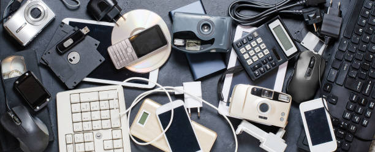
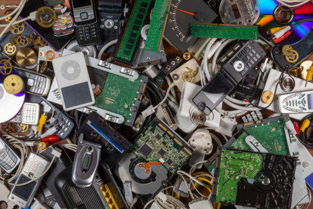
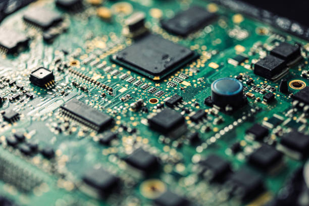
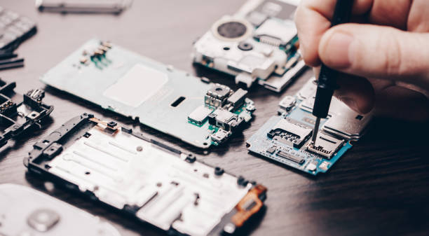
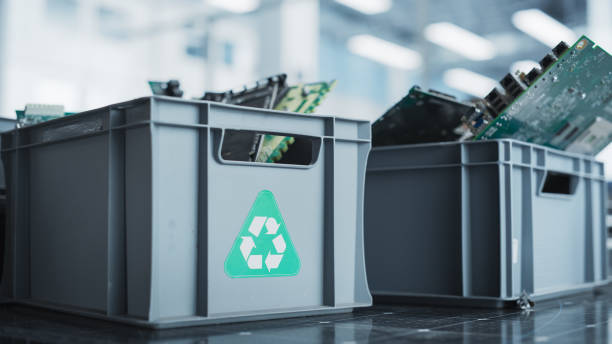

E-Waste Management in Student Life
E-waste, or electronic waste, is the term for all the old gadgets we throw away—things like mobile phones, laptops, chargers, headphones, tablets, and other digital devices. As technology keeps advancing, people are upgrading their devices more often than ever, which has created a fast-growing global waste problem. This issue is closely linked to Sustainable Development Goal 12, which is all about responsible consumption and production.
Students are a key part of this story because tech is everywhere in student life. From online classes and messaging, to study apps and streaming videos, students use electronic devices all day, every day. This page looks at what e-waste actually is, why it matters on a global scale, how students are contributing to the problem, and what practical steps can be taken to handle e-waste in a more responsible way.
1. What is E-Waste?

E-waste covers any electrical or electronic item that is no longer wanted, no longer works, or has been swapped out for a newer version. It includes not just big devices like computers and phones, but also smaller gadgets that we barely notice in everyday life.
Common examples are mobile phones, chargers, earphones, batteries, tablets, keyboards, flash drives, and cables. These things often get replaced quickly because they break, slow down, get lost, or get pushed aside by newer models.
Why this matters
Many electronic devices contain useful materials like copper, aluminium, and even small amounts of gold. At the same time, they can also carry harmful substances. When these products are thrown away carelessly, we lose both the chance to reuse valuable materials and the safety that proper disposal should provide.
2. Global Impact of E-Waste
E-waste isn’t just a personal or local issue—it’s a serious global environmental challenge. Every year, millions of tonnes of electronic waste are produced worldwide, and a huge share of it never gets recycled properly. Instead, it often ends up in landfills or is shipped to poorer regions, where it’s taken apart under unsafe and unhealthy conditions.
Electronic products can contain harmful substances like lead, mercury, and cadmium. When devices are burned, smashed apart carelessly, or left in poorly managed disposal sites, these toxins can leak into the soil, water, and air. That pollution can stick around for years, damaging ecosystems and putting people’s health at risk over the long term
Social and environmental consequences
In some places, informal recycling happens with little or no safety gear and no proper safety systems. Workers may handle dangerous materials directly, tearing devices apart by hand and breathing in toxic fumes or dust. At the same time, valuable resources inside electronics are lost when devices are simply thrown away instead of being safely recycled and recovered.
3. Why Students Contribute to E-Waste
Students are heavy users of technology. Phones, laptops, tablets, chargers, and accessories are now part of everyday academic life. That also means students can easily slip into the e-waste cycle when gadgets are swapped out too often or tossed aside without much thought.
One big driver is constant upgrading. New models, higher software requirements, and shifting trends push people to replace electronics even when their current devices still work. Another factor is convenience. Small items like chargers, earphones, and cables are often just replaced instead of being fixed, even if the damage is minor.
Lack of awareness
Many students simply don’t know where or how to recycle electronics the right way. Because of that, broken devices can end up sitting in drawers for years, getting thrown into regular trash, or left unused on shelves instead of being repaired, donated, or recycled.
4. Problems with Current Disposal

One of the biggest issues with e-waste is that it often gets thrown into regular household trash. When that happens, electronic items almost always end up in landfills instead of going through proper recycling channels where they can be handled safely.
Another problem is the lack of convenient disposal options. In many areas, e-waste collection points are limited, hard to find, or poorly promoted. Even where recycling exists, students may avoid it because the process seems confusing, time-consuming, or just too much effort.
Unsafe recycling methods
Improper disposal also includes risky recovery practices, like burning wires or smashing electronics apart without proper tools or protection. These methods can release toxic fumes and expose people and the environment to harmful chemicals, turning a simple “fix” into a serious health and environmental hazard.
5. Practical Solutions for Students

Students can cut down on e-waste by making small, practical changes in how they use their gadgets. One of the most effective steps is simply using devices for longer instead of rushing to upgrade. Protecting them with cases, charging them safely, and storing them carefully can make a big difference in how long they last.
Repair instead of replace
When a device starts to act up, getting it fixed is often a smarter and more sustainable choice than buying a new one. Simple repairs—like replacing a battery, fixing a screen, or swapping out a broken cable—can cut down on waste and also save money at the same time.
Donate, resell, or recycle properly
If a device still works, it can be donated, given to someone else, or sold instead of being thrown away. Electronics that are truly beyond use should go to proper e-waste collection points, where materials can be safely recovered and any harmful substances are handled the right way.
6. Building Sustainable Tech Habits

Managing e-waste isn’t just about recycling once in a while; it’s about building better, everyday habits around how we use technology. Small actions that you can keep up over time are usually more realistic and more effective than big lifestyle changes that are hard to stick to.
Think before buying
Before getting a new device, students can pause and ask whether their current one still covers what they need, whether it can be repaired, or whether an upgrade is really necessary. This kind of thinking helps cut down on impulse purchases and leads to more responsible consumption.
Take care of existing devices
Simple habits—like not overcharging batteries, storing electronics safely, keeping cables and accessories organised, and avoiding rough handling—can all help devices last longer. Students can also make a bigger impact by sharing what they know about responsible e-waste management with friends, classmates, and family.
7. Conclusion

E-waste management is a key part of responsible consumption under Sustainable Development Goal 12. As technology becomes more essential for education and everyday life, the amount of electronic waste keeps rising. Students are directly involved in this issue because they use and replace devices so frequently.
By using electronics for longer, repairing instead of replacing, recycling correctly, and forming more conscious habits around technology, students can significantly cut down their contribution to e-waste. Individually, these steps may seem small, but when whole communities adopt them, they can help drive more responsible production, consumption, and environmental protection.